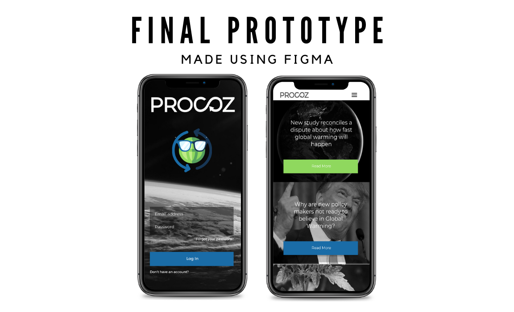
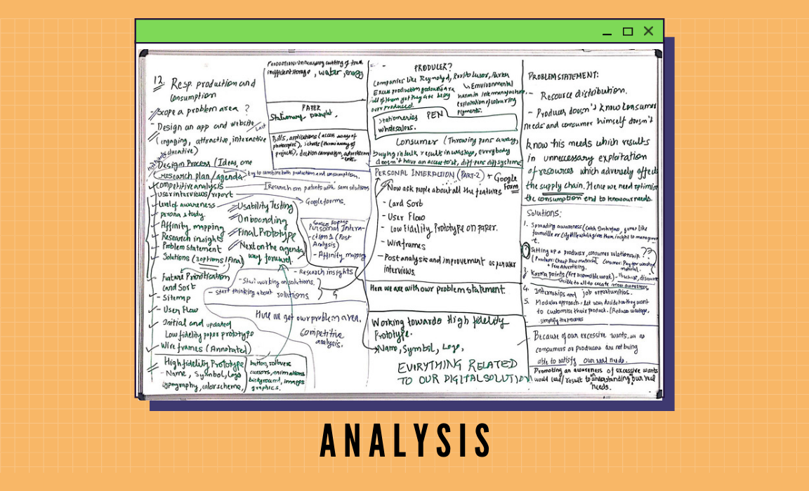

Procoz
[Figma] [Design Process]
A solution to address SDG 12 which aims at “Responsible Consumption and Production”. The transition to sustainable consumption and production of goods and services is necessary to reduce the negative impact on the climate and the environment, and on people's health.
Analysis
After researching on the project intensively we came to the conclusion that focusing on only one aspect of the SDG i.e. production or consumption wasn’t an option as it will eventually clash with the other SDGs. We needed to connect production and consumption with the users in a way that the users become aware of their own requirements and the production can be optimised accordingly. We needed to reduce the wastage that happened due to overproduction and underconsumption.
